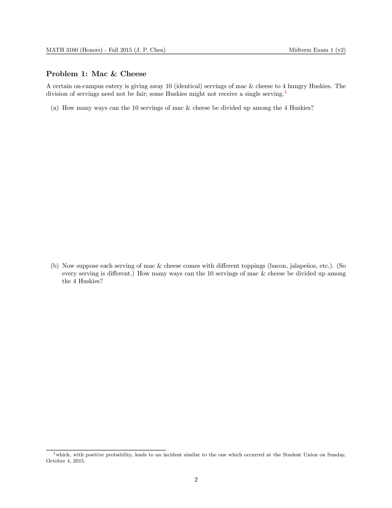
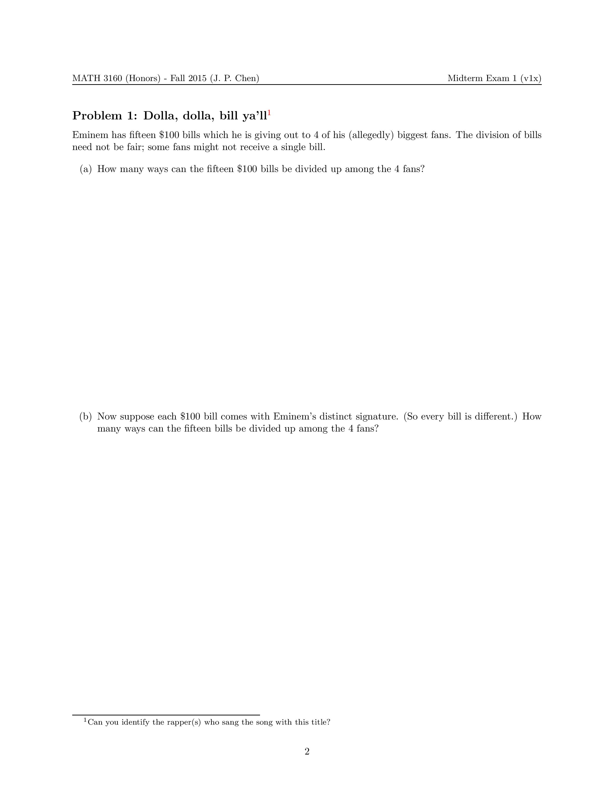

|  |  |
Math concepts used: Combinatorics, (weak) compositions.
Background: On October 4, 2015, a few days before the 1st midterm exam, it was reported on the UConn social media that an inebriated student brought an open container of alcohol into the Student Union, asked for bacon jalapeno mac and cheese, and was refused service by the dining manager. The student then went on a wretched 6-minute profanity-laced argument-cum-tussle with the manager, before being tackled to the floor by a chef, and then handcuffed by the police. The whole episode can be seen in this 9-min video which has gone viral. [WARNING: NSFW!] As of October 21, 2015, the student is no longer enrolled at UConn.
Relevance: Students in MATH 3160 need to know how many ways to divide up a certain group of objects. This is one of the basic topics they learn before being introduced to the axiomatic probability setup.
What I did: Due to my conference travel a week prior, I had already written a first draft of the exam, wherein Problem 1 involved dividing up dollar bills (see the dolla dolla bill example above). But after the mac and cheese incident, it was only natural to rewrite the problem using the most timely ingredients. (Plus I was afraid that students would not get mid-00s rap references.) Hence dollar bills became servings of mac and cheese, with a sprinkle of bacon and jalapeno to boot.
Aftermath: I tweeted the problem out to @NoEscalators (again). Since October 8, the tweet has attracted 25,000+ views, even more than the UConn-Yale problem tweet.
Acknowledgements: Thanks to Tom Roby for stressing the compositions part of the combinatorics curriculum in MATH 3160, so that I had the right context to write this problem.
{kind=link}
{kind=link}